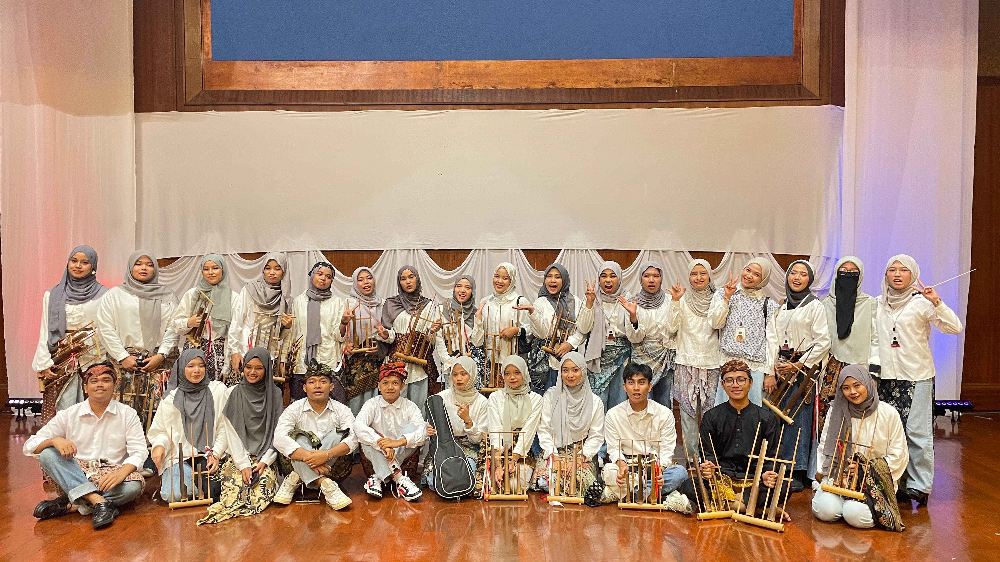

FESTIVAL BUDAYA NUSANTARA
9-10 Agustus 2025, Bukit Jambul Complex, Penang. 2-Days Festival Appearance menampilkan pertunjukan eksklusif di luar ruangan yang dihadiri oleh lebih dari 250 peserta, menghadirkan pengalaman musik dan hiburan yang seru selama dua hari penuh.

SEMARAK GARUDA
17 Agustus 2025, Albukhary International University. Indonesian Independence Day Special menampilkan pertunjukan budaya lengkap dengan showcase dan koreografi, merayakan semangat kemerdekaan melalui pengalaman seni yang meriah dan berkesan.

INDIVERSION
7 September 2025, Albukhary International University. International Performers menampilkan aksi panggung dari para performer internasional, dihadiri oleh lebih dari 150 audiens, dalam rangka acara besar tahunan PPI AIU yang selalu dinanti setiap tahunnya.

DUBES X KJRI
5 November 2025, Wisma Indonesia, Penang. Closing Ceremony Performance menampilkan pertunjukan budaya yang memukau sebagai penutup acara, menghadirkan showcase seni yang meriah dan berkesan bagi seluruh audiens.